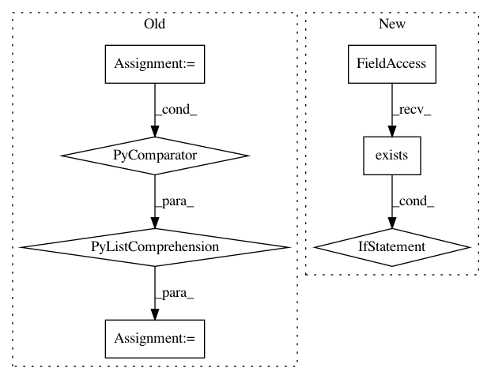

7533d3b3abeaedd42a2ee4869a77e48ba2e2016a,lore/env.py,,set_python_version,#Any#,128
Before Change
else:
prefix = os.path.realpath(sys.prefix)
bin_python = os.path.join(prefix, "bin", "python" + ".".join([str(i) for i in python_version_info[0:2]]))
if not os.path.exists(bin_python):
bin_python = os.path.join(prefix, "bin", "python" + str(python_version_info[0]))
if not os.path.exists(bin_python):
bin_python = os.path.join(prefix, "bin", "python")
After Change
bin_python = os.path.join(prefix, "bin", python_patch)
if not os.path.exists(bin_python):
bin_python = os.path.join(prefix, "bin", python_minor)
if not os.path.exists(bin_python):
bin_python = os.path.join(prefix, "bin", python_major)
if not os.path.exists(bin_python):
bin_python = os.path.join(prefix, "bin", "python")
bin_lore = os.path.join(prefix, "bin", "lore")
bin_jupyter = os.path.join(prefix, "bin", "jupyter")
In pattern: SUPERPATTERN
Frequency: 3
Non-data size: 7
Instances
Project Name: instacart/lore
Commit Name: 7533d3b3abeaedd42a2ee4869a77e48ba2e2016a
Time: 2018-02-23
Author: montanalow@users.noreply.github.com
File Name: lore/env.py
Class Name:
Method Name: set_python_version
Project Name: erikbern/ann-benchmarks
Commit Name: 4f8c0be0d5bcf6a400a0debe2215ee312dbf3d60
Time: 2018-03-07
Author: alef@itu.dk
File Name: ann_benchmarks/main.py
Class Name:
Method Name: main
Project Name: astroML/astroML
Commit Name: a1292078d2016dff4228fff869430ab4ace79b6b
Time: 2019-01-04
Author: bsipocz@gmail.com
File Name: astroML/datasets/sdss_corrected_spectra.py
Class Name:
Method Name: fetch_sdss_corrected_spectra